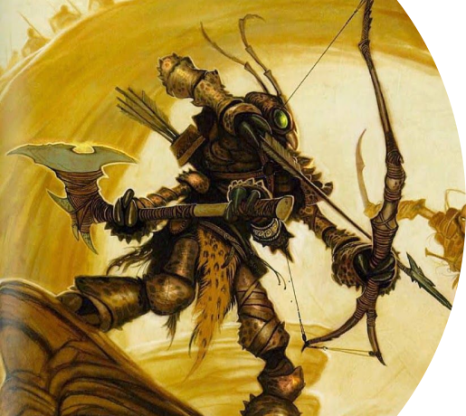
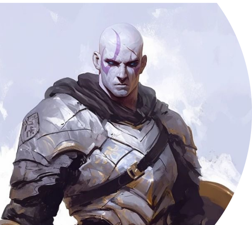

Список персонажей
Торлинг Эйкатра

Раса: Фирболг
Класс: Друид
Подкласс: Круг луны
Предыстория:
Торлинг Эйкатра происходит из древнего рода стражей священного леса. Когда-то в этом лесу кипела жизни и повсюду текла магия. В каждой веточке и каждом живом существе. Род друидов Эйкатра тысячилетиями защищал эту священную землю.
Так-тха
Раса: Три-Крин
Класс: Следопыт
Подкласс: Хранитель роя
Предыстория:
Так-тха был лучшим охотником своего выводка. Его умение сливаться с окружающей средой и управлять роем насекомых делало его практически невидимым в лесу. Когда древнее зло вторглось в его родные земли, Так-тха поклялся защищать природу и все живые существа.
Браг Камнешаг
Раса: Голиаф
Класс: Паладин
Подкласс: Клятва короны
Предыстория:
Браг вырос в деревне высоко в горах. В какой-то момент, движимый чувством справедливости, он ушёл в ближайшее крупное королевство. Там он присягнул на верность короне, поклявшись охранять и чтить закон. Его непоколебимая воля и стальная броня делают его непобедимым защитником слабых.
Характеристики персонажей
| Персонаж | Сила | Ловкость | Телосложение | Интеллект | Мудрость | Харизма | Уровень |
|---|---|---|---|---|---|---|---|
| Торлинг Эйкатра | 10 | 14 | 16 | 12 | 18 | 10 | 5 |
| Так-тха | 12 | 18 | 14 | 10 | 16 | 8 | 5 |
| Браг Камнешаг | 18 | 10 | 16 | 8 | 14 | 16 | 5 |
| * Все характеристики указаны с учетом расовых и прочих бонусов | |||||||